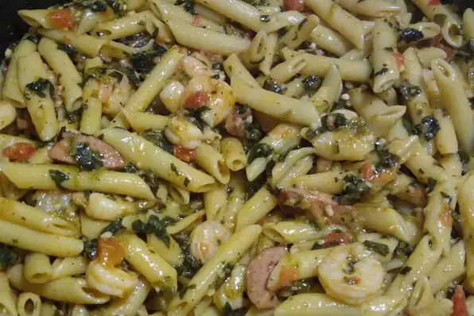

Pasta Recipe

Description
This quick and easy shrimp scampi pasta recipe is an Allrecipes
fan-favorite, with more than one thousand ratings and hundreds of reviews.
And it's ready to serve in only 40 minutes. Read on to get tips to make
the best shrimp scampi with pasta — it's a top-rated recipe that's simple
enough for weeknight dinners and fancy enough for a dinner party.
Ingredients
- shrimp
- pasta
- butter
- olive oil
- shallots and garlic
- white wine
- lemon juice
- Italian seasoning
- parsley
Steps
-
Bring a large pot of salted water to a boil; cook linguine in boiling
water until nearly tender, 6 to 8 minutes. Drain.
-
Melt 2 tablespoons butter with 2 tablespoons olive oil in a large
skillet over medium heat. Cook and stir shallots, garlic, and red pepper
flakes in the hot butter and oil until shallots are translucent, 3 to 4
minutes. Season shrimp with kosher salt and black pepper; add to the
skillet and cook until pink, stirring occasionally, 2 to 3 minutes.
Remove shrimp from skillet and keep warm.
-
Pour white wine and lemon juice into skillet and bring to a boil while
scraping the browned bits of food off of the bottom of the skillet with
a wooden spoon. Melt 2 tablespoons butter in skillet, stir 2 tablespoons
olive oil into butter mixture, and bring to a simmer. Toss linguine,
shrimp, and parsley in the butter mixture until coated; season with salt
and black pepper. Drizzle with 1 teaspoon olive oil to serve.